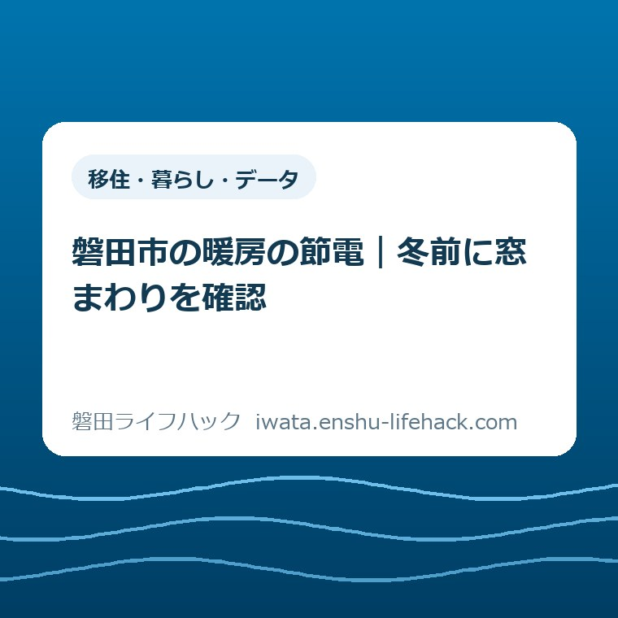

移住・暮らし・データ
磐田市の暖房の節電｜冬前に窓まわりを確認

この記事の要点
Q. 暖房の節電、何から確かめればよい？
A. 住まいと家族の条件で効果は異なります。まず一室で、窓を閉めた状態とカーテンの使い方を確認しましょう。市はカーテンなどで冬の外気を調節する方法を案内しています。設定温度を下げることだけを目標にせず、最新情報は市公式で確認してください。
家計を守る人に、もう一つ仕事を足す前に
冬の電気代を考える人は、請求書が届く前から働いています。食費、通学、車の維持費、家の支払いを並べ、どこを動かせるか考える。暖房を使う時間まで家族ごとに違えば、単に節約してくださいと言われても、引き受ける仕事が増えるだけです。
磐田市で暮らすご家族でも、戸建てか集合住宅か、持ち家か借家かで、できる工夫は変わります。窓の数や向き、部屋の使い方も同じではありません。この記事は、どの家でも同じ温度にすれば同じ金額が浮く、と案内するものではありません。
大石浩之（磐田市／不動産業）として、私は家計の話を、今日だれが何を確かめるかまで小さくしたいと考えます。設備の購入先を探す前に、普段使う一室の窓まわりを見る。今回の確認はそこまでです。部屋全部の改善計画を作る必要はありません。
新しい物を買わなくても始められる確認には、支出を決めずに済む利点があります。一方、窓を見ただけで暖房費がいくら減るかは分かりません。確認した結果、今の使い方を続けると決めても構いません。気になる点が一つ分かれば、次に聞く内容が具体的になります。
以下は2026年11月8日に確認した市の公表情報と、私の提案を分けた記事です。補助制度や施設の利用条件は個別に変わります。体験談として紹介できる原記録はないため、架空の相談者や、訪問した家での出来事は書いていません。
まず市公式の節電案内を読む
磐田市の「節電にご協力ください」は、2024年7月17日更新の案内です。「家庭でできる節電アクション」に、エアコンの設定温度の見直しと、カーテンなどによる冬の外気の調節を挙げています。2026年に新設された仕組みではなく、冬支度に読み直せる既存の案内です。
同ページは、節電を無理のない範囲で行うよう呼びかけています。節電のために家族の生活を一律に変える指示ではありません。市の案内を生活に置き換える際も、各家庭が続けられる範囲を考えることが出発点になります。
設定温度の説明には、冬の暖房設定を1℃低くすると約10％節電できるという目安があります。ここで書かれているのは暖房の設定を変える説明です。世帯の電気料金の合計が、そのまま10％減るという説明ではありません。
私がこの数字を読むときは、最初に「何の数字か」を分けます。暖房以外にも冷蔵庫や照明などを使う家で、請求額全体に同じ割合を掛けて節約額を約束することはできません。この記事でも、家庭別の削減額は算出しません。
電気代の増減を比べるときには、使った量だけでなく、請求期間や料金の条件も確認したいところです。前年の請求書との差を、一つのカーテンの効果だと決めるのは早い。まずは数字の評価と、窓まわりの状態の確認を別々に扱います。
窓まわりは、一室だけ見ればよい
今日の対象は、家族がよく過ごす一室に絞ります。居間でも、日中に仕事をする部屋でも構いません。だれも使わない部屋から始めるより、普段の使い方を知っている人が確認できる部屋のほうが、家族への説明を短くできます。
最初は普段の位置から、窓が閉まっているか、カーテンを無理なく開け閉めできるかを見ます。家具や荷物を動かさないと触れない場所なら、今日はその状態をメモするだけにします。高い場所への作業や、重い物の移動を、この確認に含める必要はありません。
次に、カーテンを閉めるとどの部分が覆われるかを見ます。端や下側の状態を言葉にできれば十分です。「短い気がする」だけで新しい物を注文せず、どの窓のどの部分かを家族に伝えられるようにします。
ここで挙げた観察の順序は、私の提案です。市が定めた点検基準でも、断熱性能を測定する方法でもありません。見た目から窓の性能や工事の必要性を判定することはできません。気になる不具合があれば、設備の説明書や管理先の案内に沿って確認します。
借家では、貼り付ける物や部品交換を含む作業へ進む前に、管理会社や貸主に確かめたい条件があります。窓まわりを見たことと、加工してよいことは別です。原状を変える前に止まれるよう、まず記録だけを残す段階を設けます。

買替えの前に残す、短い確認メモ
私なら、記録欄を「部屋」「窓の気になる部分」「だれに聞くか」の三つにします。細かな寸法をすべて測る表から始めると、記録そのものが仕事になりかねません。今日確かめた一か所を、あとで取り違えずに説明できる量で十分です。
たとえば記入例は「居間／カーテン下側が気になる／家族と確認」です。これは実際の相談記録ではなく、書き方の見本です。この段階では、隙間が何センチあると何円損をする、という結論までは付けません。
買い足す物が必要かどうかは、別の日に考えられます。購入を検討するなら、価格だけでなく、設置できるか、開閉を妨げないか、借家の条件に合うかも確かめたい。今日の観察を、すぐ注文する理由に変えないことが、家計の段取りを守ります。
家族に共有するときも、「暖房を使いすぎている」ではなく、「この窓のここを一緒に見てほしい」と頼む形を私は勧めます。使う人を責める言い方より、見てほしい場所を一つ示すほうが、次にすることを共有しやすいと考えるからです。
記録を増やすのが負担なら、一文だけでも構いません。写真を撮る場合は、家族の顔や住所などが写り込んでいないかも確かめます。相談に使う資料は、必要な部分だけにする。家全体の情報をまとめて送る必要はありません。

良い点——購入を決めずに始められる
市の案内の良い点は、家電の買替えだけに入口を絞っていないことだと私は考えます。使い方やカーテンの調節も並んでいれば、まとまった支出を決める前に、今ある物で確認する余地ができます。予算を組む人にとって、この順序は助けになります。
また、無理のない範囲という言葉を、私は省略したくありません。家族の過ごし方は違います。節電の工夫を、設定温度を下げられる人と下げられない人の評価に変えてしまうと、同じ家の中で相談しづらくなるからです。
暮らしの支出を整えるとき、毎回の作業を増やさない視点も役立ちます。水道料金の支払い方は、口座振替とスマホ払いの比較で整理しています。暖房の記事で支払方法まで変更する必要はありませんが、家計管理には作業の回数も含まれるという点は共通します。
食費では、買い物前の冷蔵庫確認を一つの入口にしました。窓の確認も同じく、家族に新しい義務をまとめて渡す話にはしたくありません。すでに回している家事の中に、どこまでなら入れられるかを考えます。
注文したい点——数字の対象を近くに書いてほしい
市の案内に注文したい点は、節電割合のすぐ近くで、家庭全体の料金とは別の数字だと読み取りやすくしてほしいことです。これは一事業者としての私の要望です。大きく見える割合だけを覚えると、期待する金額との間にずれが生まれます。
もう一つ、カーテンの案内から実際の確認へ移るための、短い記録例があると助かると私は考えます。窓の種類を専門用語で分類する前に、「どの部屋のどこが気になるか」を書ければ、家族や管理先との会話を始められます。
ただし、案内を細かくすれば必ず使いやすくなる、とも言い切れません。チェック欄が増えすぎると、読む時間も確認する場所も増えます。私は詳しい一覧を作るべきか迷いますが、入口は一室のメモ程度に留めるほうが、今回の読者には合うと判断しました。
家庭の窓の状態を見ないまま、設備の購入や工事を勧めることも避けたいと思います。費用を払えば必ず期待どおりになる、という話ではありません。観察したこと、専門家に聞くこと、購入するかどうかを、順番に分けて扱います。
冬の施設利用と、自宅の確認を混ぜない
市公式の「ふじのくにCOOLチャレンジ『クルポ』を実施しています」は、2026年6月15日更新です。「磐田市が登録するアクション」に、えねシェアのウォームシェア期間を12月～2月と掲載しています。中央図書館や福田図書館などが一覧にあります。
11月8日のこの記事では、12月からの期間を、すでに始まっている取組みとして案内しません。施設が一覧に載っていることと、その日の開館や催し、個々の利用条件を確認したことも別です。訪問する場合は施設の最新案内を読みます。
この情報は、冬の過ごし方を考える際の補助資料です。施設へ行けば家庭の暖房費がいくら減るかは確認できていません。移動にも時間や費用がかかります。節電のためだけに外出を増やす提案にはせず、自宅の窓の確認とは分けて紹介します。
家の中の確認を一度に増やしたくない場合、別の設備は別の日に回せます。住宅用火災警報器の作動確認は、今回の暖房の節電とは別のテーマです。この記事を読んだ日に、両方を終える予定を立てる必要はありません。
対案・結論——今日は一室の状態を一文にする
今日の一歩は、一室の窓とカーテンを見て、気になる部分を一文にすることです。窓を替えるか、家電を買うか、暖房の設定を変えるかは、この一文を書いた後でも決められます。観察と支出の決定を同じ日にまとめなくてよい、と私は考えます。
確認の順番は、普段使う部屋を選ぶ、無理なく見える窓まわりを見る、一文に残す、です。手が届かない、荷物を動かす必要がある、と分かった場合は、その点を書いて終了します。できなかった確認を、無理な作業で埋め合わせる必要はありません。
特に不具合が見つからなければ、「今の状態を家族と確認した」で終わって構いません。何か買う結論が出なければ失敗、という作業ではありません。確認する前より、家族が同じ場所を指して話せる状態になることが、今回の成果です。
市の節電割合は目安として読み、自宅の請求額を約束する数字にはしません。見直す対象を一つにすると、まだ分からないことも分けておけます。性能や費用を判断する相談へ進むなら、今日の記録を使って、必要な質問を一つずつ確かめます。
確認した日と、判断を残す
家族にメモを渡すときは、見た日も添えます。たとえば「11月8日、居間の窓を確認」と書けば、以前の状態について話しているのか、今日の状態について話しているのかを区別できます。同じ部屋でも家具の位置や使う時間が変われば、次に確かめる場所が変わるためです。
あわせて「今日は購入を決めていない」と残しておく方法もあります。調べた人が買うつもりだと受け取られると、家族の話が価格比較へ進みかねません。確認済みなのは窓まわりの状態、これから考えるのは対応の要否。この二つを分ければ、忙しい日に判断を持ち越す場合にも、続きを始める場所が分かります。
大石の視点——手間も家計の一部として数える
私は、安い物を買うことだけを節約と呼びたくありません。探す人、注文する人、取り付ける人、使い方を説明する人が必要になります。その役割を決めずに物だけ増やせば、家の仕事は増える。家計の判断には、だれが動くかも含めたいと考えます。
だから今回、言い切れるのは「買替えの前に確認の段階を置く」という順序です。どの製品が最適か、何円減るかは、この資料と窓の観察だけでは決められません。答えられる範囲を小さく保つことが、あとから余計な負担を増やさないための線引きです。
暖房を使う冬の前に、家族の予定を大きく変えず、一室だけ見ておく。続きの判断は、必要になった時に進められます。市の数値や取組みは更新される場合があります。最後は磐田市公式の節電案内と、利用する制度・施設の公式ページで最新の条件を確認してください。
よくある質問
暖房の設定を1℃下げると電気代全体が10％減りますか？
市の案内は暖房の設定変更による節電の目安です。家庭全体の請求額が10％減るという説明ではありません。使う設備や時間、料金条件は家庭ごとに異なります。この記事では削減額を保証せず、市公式の案内で数値の対象を確認します。
借家でも窓まわりを確認できますか？
まず無理なく見える範囲で、窓が閉まっているか、カーテンの状態はどうかを確認します。この記事の提案は観察と記録までです。部品交換や貼り付けなど、原状を変える作業の可否は、契約条件と管理会社・貸主の案内で個別に確かめてください。
今日は何をすればよいですか？
普段使う一室を選び、窓とカーテンの気になる部分を一文で残してください。高い場所や重い物を動かす作業は含めません。購入や設定変更は別の判断です。市の最新案内も確認し、自分の家で無理なく確かめられる範囲を決めます。
参考にした公式情報
- 節電にご協力ください／磐田市（2026年11月8日確認）
- ふじのくにCOOLチャレンジ「クルポ」を実施しています／磐田市（2026年11月8日確認）
最終確認日：2026-11-08 ／ 本記事は公表情報と執筆者の見解を分けて記載しています。制度・数値・公開状況は変更される場合があるため、最新情報は磐田市公式ページでご確認ください。